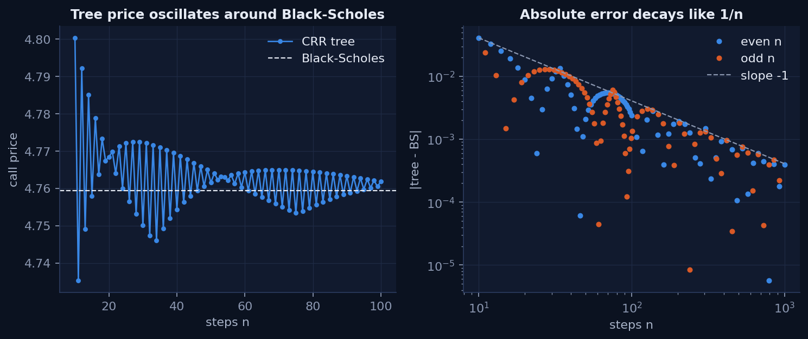
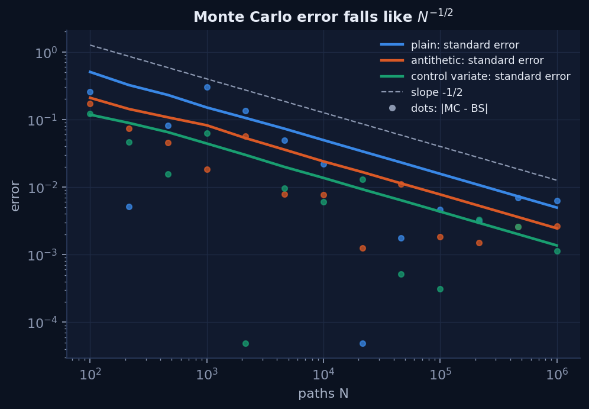
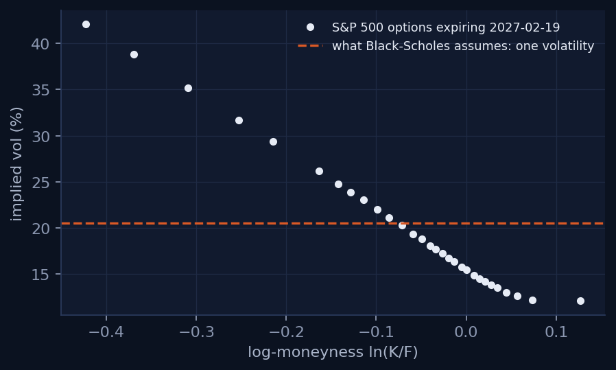
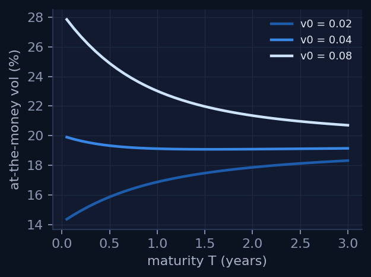
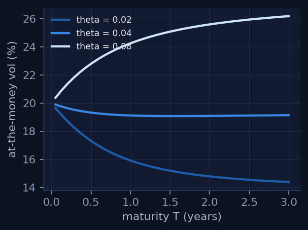
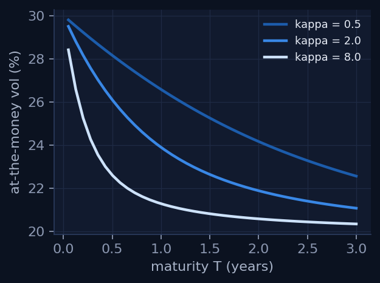
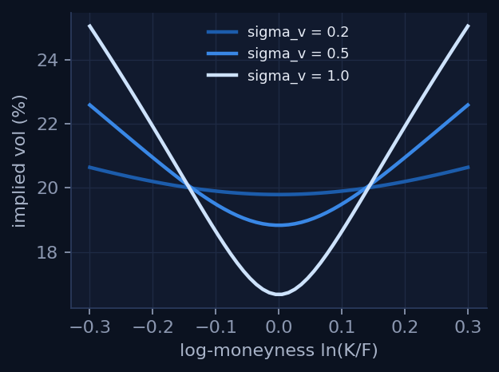
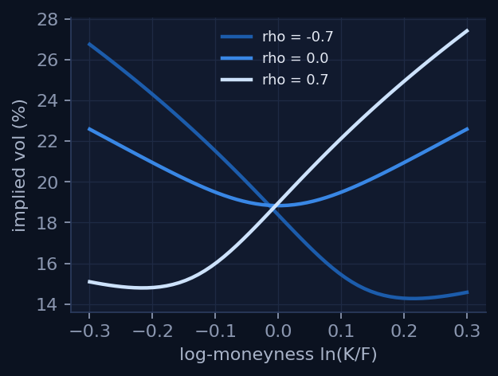
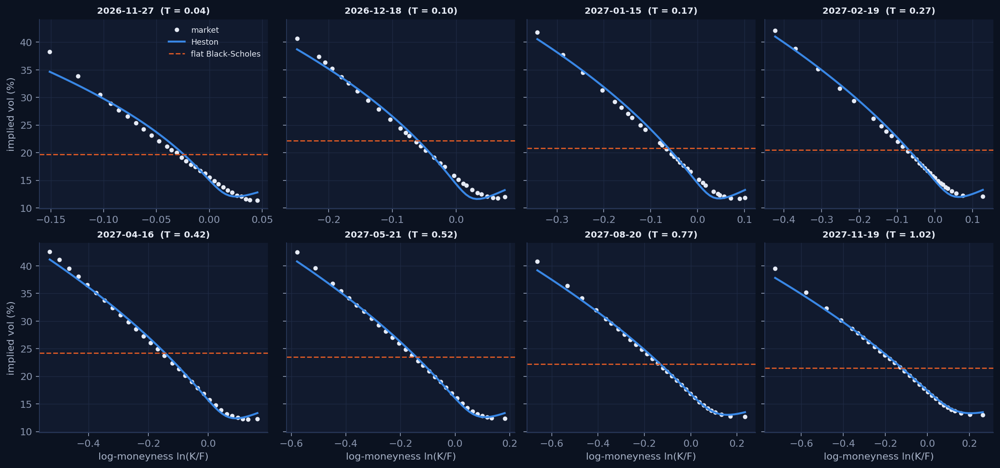

Documentation
Every formula used in the project and every number shown in the app, explained from the start.
Overview and notation
The project has two parts. Part 1 prices a European option three ways (a closed formula, a binomial tree and Monte Carlo simulation), computes its sensitivities, and measures how fast the two numerical methods converge to the formula. Part 2 takes real S&P 500 option prices, shows that a single Black–Scholes volatility cannot explain them, and fits the Heston stochastic-volatility model to all maturities at once.
Each topic below follows the same five steps: intuition, mathematics, assumptions and limitations, how to read the output, and where it is implemented.
In the app each tab opens with its main result only. Click a section title to open the rest, and hover over an ⓘ for a one-line explanation of the number next to it.
| Symbol | Meaning | Hull's example |
|---|---|---|
| \(S_0\) | Price of the underlying asset today (spot) | 42 |
| \(K\) | Strike price: the price at which the option holder may buy (call) or sell (put) | 40 |
| \(T\) | Time to maturity in years | 0.5 |
| \(r\) | Risk-free interest rate, continuously compounded | 0.10 |
| \(q\) | Dividend yield, continuously compounded | 0 |
| \(\sigma\) | Volatility: annualised standard deviation of log-returns | 0.20 |
The worked examples of Part 1 use Hull's textbook example in the last column, which is also the default in the app. A European call pays \(\max(S_T - K, 0)\) at maturity and a European put pays \(\max(K - S_T, 0)\), where \(S_T\) is the asset price at maturity.
Risk-neutral pricing in one page
Intuition
An option's payoff depends on a price that is unknown today, so it seems that its value must depend on how optimistic investors are. It does not. If the option can be replicated by trading the stock and a bank account, its price must equal the cost of that replicating portfolio, otherwise there is a risk-free profit. The cost of replication does not involve the stock's expected return.
This has a convenient consequence: the price can be computed as if every asset grew on average at the risk-free rate. This pretend world is called the risk-neutral measure, written \(\mathbb{Q}\).
Mathematics
The price today of any European payoff is its expected value under \(\mathbb{Q}\), discounted at the risk-free rate:
$$V_0 = e^{-rT}\,\mathbb{E}^{\mathbb{Q}}\big[\text{payoff}(S_T)\big]$$In the Black–Scholes world the stock follows a geometric Brownian motion whose drift under \(\mathbb{Q}\) is \(r - q\), not its real-world expected return:
$$dS_t = (r - q)\,S_t\,dt + \sigma S_t\,dW_t \quad\Longrightarrow\quad S_T = S_0 \exp\!\Big(\big(r - q - \tfrac12\sigma^2\big)T + \sigma\sqrt{T}\,Z\Big),\quad Z \sim N(0,1)$$Here \(W_t\) is a Brownian motion and \(Z\) a standard normal random variable. The term \(-\tfrac12\sigma^2\) makes the average of \(S_T\) equal to \(S_0 e^{(r-q)T}\), the forward price.
The three pricing methods of Part 1 compute this same expectation in three ways: Black–Scholes integrates it exactly, the binomial tree replaces the normal distribution by a discrete one, and Monte Carlo averages random samples.
Assumptions and limitations
- "Risk-neutral" does not mean that investors ignore risk. Risk aversion is already contained in today's stock price \(S_0\).
- The argument needs continuous trading without costs and a model in which replication is possible. In the Heston model variance is a second source of risk, and \(\mathbb{Q}\) is then chosen by calibrating to option prices (Part 2).
Black–Scholes–Merton
Intuition
If volatility is constant, the risk-neutral expectation above can be computed in closed form. The result is the Black–Scholes–Merton formula: a fast, exact benchmark against which the other methods are checked.
Mathematics
$$c = S_0 e^{-qT} N(d_1) - K e^{-rT} N(d_2), \qquad p = K e^{-rT} N(-d_2) - S_0 e^{-qT} N(-d_1)$$ $$d_1 = \frac{\ln(S_0/K) + \big(r - q + \tfrac12\sigma^2\big)T}{\sigma\sqrt{T}}, \qquad d_2 = d_1 - \sigma\sqrt{T}$$\(c\) and \(p\) are the call and put prices and \(N(\cdot)\) is the standard normal cumulative distribution function. \(N(d_2)\) is the risk-neutral probability that the call finishes in the money; \(S_0 e^{-qT} N(d_1)\) is the present value of the stock received in that case.
Calls and puts with the same strike and maturity are linked by put–call parity, which holds in any model without arbitrage:
$$c - p = S_0 e^{-qT} - K e^{-rT}$$Assumptions and limitations
- Constant volatility and interest rate; log-normal prices with no jumps; continuous trading without costs.
- European exercise only.
- Real markets violate the constant-volatility assumption. That is the subject of Part 2.
How to read the output
With Hull's example:
$$d_1 = \frac{\ln(42/40) + (0.10 + 0.02)\times 0.5}{0.2\sqrt{0.5}} = 0.7693, \qquad d_2 = 0.7693 - 0.1414 = 0.6278$$ $$c = 42 \times 0.7791 - 40\,e^{-0.05} \times 0.7349 = 32.72 - 27.96 = 4.76, \qquad p = 0.81$$The Black–Scholes card in the Pricer tab shows 4.7594. The parity check is \(c - p = 4.7594 - 0.8086 = 3.9508 = 42 - 40e^{-0.05}\).
pricing/black_scholes.py: bs_price, d1_d2, and the analytic Greeks bs_delta, bs_gamma, bs_vega, bs_theta, bs_rho. All functions accept numpy arrays, which the 3D surfaces rely on.Binomial tree (Cox–Ross–Rubinstein)
Intuition
Split the life of the option into \(n\) short steps. In each step the stock either rises by a factor \(u\) or falls by a factor \(d\). Starting from the known payoffs at maturity, work backwards: the value at each node is the discounted average of the two values that can follow it. The tree needs no formula for the payoff, so it also handles early exercise.
Mathematics
$$\Delta t = \frac{T}{n}, \qquad u = e^{\sigma\sqrt{\Delta t}}, \qquad d = \frac1u, \qquad p^* = \frac{e^{(r-q)\Delta t} - d}{u - d}$$\(p^*\) is the risk-neutral probability of an up move. It is chosen so that the expected stock price after one step is \(S e^{(r-q)\Delta t}\). Backward induction:
$$V = e^{-r\Delta t}\big(p^*\,V_{\text{up}} + (1 - p^*)\,V_{\text{down}}\big)$$For an American option each node takes \(\max(V, \text{payoff if exercised now})\).
Assumptions and limitations
- Same model as Black–Scholes, so the European tree price converges to the formula as \(n \to \infty\).
- The error shrinks roughly like \(1/n\) but oscillates, see the convergence study.
- The work grows like \(n^2\). If \(p^*\) falls outside \((0, 1)\), which happens with very low volatility and few steps, the function raises an error instead of returning a meaningless price.
How to read the output
A two-step tree for Hull's call can be checked by hand: \(\Delta t = 0.25\), \(u = 1.1052\), \(d = 0.9048\), \(p^* = 0.6014\). The three final prices are 51.30, 42.00 and 34.39 with payoffs 11.30, 2.00 and 0, so
$$c = e^{-0.10 \times 0.5}\big[(0.6014)^2 \times 11.30 + 2 \times 0.6014 \times 0.3986 \times 2.00\big] = 4.80$$The Binomial tree card uses 500 steps by default and shows 4.7593, which is 0.00008 below Black–Scholes. The second line of the card prices the same option with American exercise. For Hull's call the two agree, because early exercise of a call on a stock without dividends is never optimal. Switch to a put to see a difference: 0.9103 (American) against 0.8085 (European), an early-exercise premium of 0.10.
pricing/binomial.py: crr_price. Each time step updates the whole layer of nodes with one numpy operation.Monte Carlo
Intuition
Draw many possible final stock prices at random, compute the payoff for each, and average. The average converges to the true expectation, and the spread of the samples tells us how far off the average is likely to be. Monte Carlo is slow for this simple option but it is the method that still works when formulas and trees do not.
Mathematics
Plain estimator. With \(N\) independent draws \(Z_i\) and \(S_T^{(i)}\) from the formula in the risk-neutral section:
$$\hat V = e^{-rT}\,\frac1N \sum_{i=1}^N \text{payoff}\big(S_T^{(i)}\big), \qquad \text{SE} = \frac{s}{\sqrt N}, \qquad 95\%\text{ interval} = \hat V \pm 1.96\,\text{SE}$$\(s\) is the sample standard deviation of the discounted payoffs and SE is the standard error of the estimate.
Antithetic variates. Every \(Z_i\) is used twice, as \(Z_i\) and \(-Z_i\), and the two discounted payoffs are averaged. A high payoff from one is offset by a low payoff from the other, so pair averages vary less than single payoffs. The standard error is computed from the \(N/2\) pair averages.
Control variate. The simulated \(S_T\) has a known mean, \(S_0 e^{(r-q)T}\). If the sample average of \(S_T\) happens to be too high, the payoff average of a call is probably too high as well, and can be corrected:
$$\hat V_{\text{CV}} = \hat V - b^*\Big(\overline{S_T} - S_0 e^{(r-q)T}\Big)e^{-rT}, \qquad b^* = \frac{\widehat{\text{Cov}}(Y, S_T)}{\widehat{\text{Var}}(S_T)}$$\(Y\) is the payoff and \(b^*\) is the slope of a regression of the payoff on \(S_T\). The variance falls by the factor \(1 - \text{corr}(Y, S_T)^2\).
Variance-reduction factor. \((\text{SE}_{\text{plain}} / \text{SE}_{\text{method}})^2\) at the same number of simulated prices. A factor of 4 means plain Monte Carlo needs four times as many paths for the same accuracy.
Assumptions and limitations
- The error falls like \(N^{-1/2}\): one more correct digit costs 100 times more paths.
- A 95% interval misses the true value about once in twenty runs. That is expected, not a bug.
- \(b^*\) is estimated from the same sample, which adds a bias of order \(1/N\), far below the standard error.
- Antithetic variates help when the payoff is monotone in \(Z\), as for calls and puts. The control variate helps most when the payoff is close to linear in \(S_T\), so it is strongest in the money and weak far out of the money.
- All three estimators use the same budget:
n_pathssimulated terminal prices.
How to read the output
Hull's call with \(N = 100{,}000\) and seed 42:
| Estimator | Price | ± 95% | 95% interval | Variance reduction |
|---|---|---|---|---|
| Plain | 4.7463 | 0.0309 | [4.7154, 4.7771] | 1.0× |
| Antithetic | 4.7659 | 0.0153 | [4.7506, 4.7812] | 4.1× |
| Control variate | 4.7637 | 0.0085 | [4.7552, 4.7723] | 13.1× |
"± 95%" is \(1.96\,\text{SE}\), the half-width of the interval. All three intervals contain the exact price 4.7594. The control variate is 13 times more efficient in variance terms, which corresponds to a correlation of 0.96 between the call payoff and \(S_T\).
Reading the interval chart
Each horizontal bar is one estimator: the dot is its price and the bar is its 95% confidence interval. The dashed vertical line is the Black–Scholes price. A correct estimator has a bar that crosses the dashed line most of the time, and a better estimator has a shorter bar. Change the seed to see the dots move while the bar lengths stay almost the same.
pricing/monte_carlo.py: mc_plain, mc_antithetic, mc_control_variate, the dispatcher mc_price, and variance_reduction_factor. Results come back as an MCResult with price, standard error and interval.Greeks
Intuition
The Greeks say how much the option price moves when one input moves a little. Traders use them to hedge: a position with delta 0.78 behaves, for small moves, like 0.78 shares. The project computes them two ways, from exact formulas and by repricing with slightly changed inputs, and compares the two.
Mathematics
| Greek | Definition | Call | Put |
|---|---|---|---|
| Delta \(\Delta\) | \(\partial V/\partial S\) | \(e^{-qT}N(d_1)\) | \(-e^{-qT}N(-d_1)\) |
| Gamma \(\Gamma\) | \(\partial^2 V/\partial S^2\) | \(\dfrac{e^{-qT}\varphi(d_1)}{S\sigma\sqrt T}\) | |
| Vega \(\nu\) | \(\partial V/\partial \sigma\) | \(S e^{-qT}\varphi(d_1)\sqrt T\) | |
| Rho \(\rho\) | \(\partial V/\partial r\) | \(KTe^{-rT}N(d_2)\) | \(-KTe^{-rT}N(-d_2)\) |
| Theta \(\Theta\) | \(-\partial V/\partial T\) | written out below | |
\(\varphi\) is the standard normal density. The finite-difference versions reprice the option with bumped inputs:
$$\Delta \approx \frac{V(S+h) - V(S-h)}{2h}, \qquad \Gamma \approx \frac{V(S+h) - 2V(S) + V(S-h)}{h^2}$$and the same central difference in \(\sigma\), \(r\) and \(T\) for vega, rho and theta. They work with any pricing function, which is the point: most real products have no formula.
Assumptions and limitations
- The error of a central difference is of order \(h^2\) for a smooth price, so a smaller bump is better for the Black–Scholes formula.
- Tree and Monte Carlo prices are piecewise linear in \(S\). With a tiny bump the second difference is zero or huge, so gamma needs a bump wide enough to average over many kinks. With a 0.1% bump the tree gamma of Hull's call comes out as 0.0000 instead of 0.0500; with 1% it is 0.0512 and with 5% it is 0.0501.
- Common random numbers. For Monte Carlo, \(V(S+h)\) and \(V(S-h)\) are computed with the same seed, hence the same \(Z_i\). The noise in the two prices is then almost identical and cancels in the difference. With independent samples the noise of the difference would be divided by the small number \(2h\) and would swamp the Greek.
How to read the Greeks table
Open the Greeks section of the Pricer tab. For Hull's call the analytic column shows the values below; the meaning of each one appears when you hover over the ⓘ next to its name.
| Greek | Value | Meaning |
|---|---|---|
| Delta | 0.7791 | The option gains about $0.78 when the stock rises by $1. |
| Gamma | 0.0500 | After that $1 rise, delta itself is about 0.05 higher. |
| Vega | 8.8134 | Per 1.00 of volatility. One volatility point (20% to 21%) adds about $0.088. |
| Theta | −4.5591 | Per year. One calendar day costs about 4.5591 / 365 = $0.0125. |
| Rho | 13.9820 | Per 1.00 of interest rate. One percentage point adds about $0.14. |
The Finite difference column applies the formulas above to the pricer chosen in the dropdown, and the Difference column shows finite difference minus analytic, with the relative error in brackets. Applied to the Black–Scholes formula the differences are tiny and only show the truncation error of the bump. Applied to the tree or to Monte Carlo they also contain that method's own error, and changing the spot bump shows the gamma effect described above.
Price and Greeks against the spot price
One line per maturity (1 month to 1 year, dark to light). The dotted vertical line is the strike. The buttons above the chart choose one quantity, or "All six" to see them side by side.
- Price: approaches the kinked payoff as maturity shortens.
- Delta: an S-shaped curve from 0 to 1 for a call. Shorter maturities are steeper around the strike.
- Gamma: a bump near the strike, taller and narrower for short maturities. This is where hedges need the most adjustment.
- Vega: also a bump near the strike, but larger for long maturities, because volatility has more time to matter.
- Theta: most negative near the strike for short maturities: time value decays fastest just before expiry.
- Rho: grows with maturity and with moneyness for a call.
3D surfaces
The same information as a surface over spot (one horizontal axis) and maturity (the other). The dropdown switches between price, delta, gamma and vega. Brighter means a higher value. The white marker is the option from the inputs panel. Drag to rotate, scroll to zoom, and use "Reset view" to return to the starting angle.
pricing/greeks.py: fd_greeks (any pricer) and compare_greeks (analytic against finite difference with absolute and relative errors). The surfaces come from the vectorised functions in pricing/black_scholes.py.Implied volatility
Intuition
Every input of the Black–Scholes formula can be observed except volatility. So the formula is usually run backwards: given an option's market price, which volatility makes the formula reproduce it? That number is the implied volatility. It is a way of quoting prices that makes options with different strikes and maturities comparable.
Mathematics
Solve \(\text{BS}(\sigma) = V_{\text{market}}\) for \(\sigma\). The Black–Scholes price increases with \(\sigma\), so there is at most one solution. It is found with Brent's method on \(\sigma \in [10^{-4}, 5]\). Before solving, the price is checked against bounds that hold in every arbitrage-free model:
$$\max\!\big(S_0e^{-qT} - Ke^{-rT},\,0\big) \le c \le S_0e^{-qT}, \qquad \max\!\big(Ke^{-rT} - S_0e^{-qT},\,0\big) \le p \le Ke^{-rT}$$Assumptions and limitations
- A price outside the bounds has no implied volatility. The function then returns NaN together with the reason.
- Deep in-the-money options are almost insensitive to volatility, so their implied volatility is unreliable. Part 2 therefore uses out-of-the-money options only.
- For whole arrays of prices a vectorised bisection is used instead of calling Brent in a loop, because calibration needs tens of thousands of inversions. Both solvers are tested to agree to \(10^{-9}\).
How to read the output
In the Pricer tab, open Implied volatility and enter an observed price. With Hull's inputs a call price of 5.00 gives an implied volatility of 22.65%: higher than the 20% that gives 4.76, because the price is higher. A price of 3.90 has no solution, because the call is worth at least \(42 - 40e^{-0.05} = 3.95\) whatever the volatility.
pricing/implied_vol.py: implied_vol (one price, Brent, with a reason on failure), implied_vol_vec (arrays, bisection) and no_arbitrage_bounds.Convergence study
Both numerical methods are compared with the exact Black–Scholes price while their accuracy parameter grows.
Binomial tree charts

- Price (the first view of the chart in the app). The tree price jumps above and below the dashed Black–Scholes line as \(n\) goes from even to odd. The reason is geometric: the strike sits at a different position between two final nodes for each \(n\), and the payoff has a kink at the strike.
- Absolute error (the second view). Both axes are logarithmic, so a power law is a straight line. The dashed reference line has slope −1, meaning error proportional to \(1/n\). The upper edge of the cloud follows it: doubling \(n\) halves the worst-case error. Points far below the line are step counts where the errors happen to cancel; they cannot be relied on.
At \(n = 1000\) the error is 0.0004.
Monte Carlo chart

- Lines are standard errors: the typical size of the error. They are parallel to the dashed reference line of slope −½, which confirms \(\text{SE} \propto N^{-1/2}\).
- Dots are the errors actually realised with one seed. They scatter around and mostly below their line, as random errors should.
- Variance reduction moves a line down without changing its slope. The gap between two lines is the square root of the variance-reduction factor.
Variance reduction table
Measured at the largest \(N\) (one million paths):
| Estimator | Std. error | Variance reduction | Efficiency gain |
|---|---|---|---|
| Plain | 0.0050 | 1.0× | 1.0× |
| Antithetic | 0.0025 | 4.1× | about 5–6× |
| Control variate | 0.0014 | 13.2× | about 8–9× |
Variance reduction compares variances at the same \(N\). Efficiency gain is fairer: it compares \(\text{variance} \times \text{computing time}\), so an estimator that is more accurate but slower gets less credit. The control variate loses some of its advantage because it does extra work (a covariance), while the antithetic estimator gains because it draws half as many random numbers. Time is measured on your machine, so the efficiency column changes a little from run to run; the standard errors do not.
pricing/convergence.py: tree_convergence, mc_convergence, variance_reduction_summary. Running python -m pricing.convergence regenerates the two figures.The volatility smile
Intuition
If Black–Scholes were right, every option on the same asset would have the same implied volatility, whatever its strike. Plotting implied volatility against strike would give a flat line. Real markets give something else.

In this sample, an option struck 35% below the forward trades at an implied volatility of 42%, and one struck 13% above at 12%. The best single volatility, 20.5%, misses almost all of them. For equity indices the curve slopes downwards and is called a skew; for currencies it is often U-shaped, hence the name smile.
Why it exists, and why Black–Scholes cannot produce it
- Fat left tail. Large falls happen more often than a log-normal distribution allows. Out-of-the-money puts pay off exactly in those cases, so they cost more than Black–Scholes says, which shows up as a higher implied volatility.
- Volatility moves, and moves against the market. When the index falls, volatility tends to rise. A falling market is therefore more dangerous than a rising one.
- Demand for protection. Investors buy puts as insurance and are willing to pay for it.
Black–Scholes has one constant \(\sigma\) and a log-normal distribution, which is symmetric in log-returns. It has no parameter that could tilt or bend the curve, so its smile is flat by construction. A model needs random volatility, jumps, or a volatility that depends on the price level to do better. Heston takes the first route.
How to read a volatility surface
A volatility surface shows implied volatility for every strike and maturity at once.
- First axis: log-moneyness \(k = \ln(K/F)\), where \(F\) is the forward price for that maturity. \(k = 0\) is at the money, negative \(k\) are low strikes (out-of-the-money puts), positive \(k\) high strikes (out-of-the-money calls).
- Second axis: maturity \(T\) in years.
- Along strikes you see the skew: how fast volatility rises as the strike falls. It is steepest for short maturities.
- Along maturities you see the term structure: whether the market expects volatility to rise or fall over time.
The app can also show total implied variance \(w = \sigma_{\text{IV}}^2\,T\). This is the quantity that accumulates over time, and for a fixed \(k\) it must not decrease with maturity, otherwise there would be a calendar-spread arbitrage. A surface that rises steadily from front to back in this view is consistent in time.
Heston model
Intuition
Heston keeps the Black–Scholes equation for the price but lets the variance be random too. Variance is pulled back towards a long-run level, like a spring, and its random shocks are correlated with the shocks to the price. A negative correlation means that volatility rises when the price falls, which produces the downward skew seen in the market.
Mathematics
$$dS_t = (r - q)\,S_t\,dt + \sqrt{v_t}\,S_t\,dW^S_t, \qquad dv_t = \kappa(\theta - v_t)\,dt + \sigma_v\sqrt{v_t}\,dW^v_t, \qquad d\langle W^S, W^v\rangle_t = \rho\,dt$$| Parameter | Meaning |
|---|---|
| \(v_0\) | Variance today. \(\sqrt{v_0}\) is today's volatility. |
| \(\kappa\) | Speed of mean reversion. A gap between \(v_t\) and \(\theta\) halves every \(\ln 2/\kappa\) years. |
| \(\theta\) | Long-run variance. |
| \(\sigma_v\) | Volatility of variance ("vol of vol"). |
| \(\rho\) | Correlation between price shocks and variance shocks. |
Feller condition. If \(2\kappa\theta \gt \sigma_v^2\), the pull towards \(\theta\) is strong enough that the variance never reaches zero. If it fails, the variance can touch zero and bounce back. The app reports the condition but does not enforce it: calibrations to index options usually violate it, and the pricing formula below stays valid either way.
Characteristic function. Heston prices are not available in closed form, but the characteristic function of the log-price is. With \(X_T = \ln(S_T/F)\), \(F = S_0e^{(r-q)T}\), and \(\varphi(u) = \mathbb{E}\big[e^{iuX_T}\big]\):
$$\varphi(u) = \exp\big(C + D\,v_0\big), \qquad \beta = \kappa - \rho\sigma_v iu, \qquad d = \sqrt{\beta^2 + \sigma_v^2\,(iu + u^2)}, \qquad g = \frac{\beta - d}{\beta + d}$$ $$C = \frac{\kappa\theta}{\sigma_v^2}\left[(\beta - d)T - 2\ln\frac{1 - g e^{-dT}}{1 - g}\right], \qquad D = \frac{\beta - d}{\sigma_v^2}\cdot\frac{1 - e^{-dT}}{1 - g e^{-dT}}$$This is the "little Heston trap" form of Albrecher et al. (2007). It is algebraically the same as Heston's 1993 formula but uses \(e^{-dT}\) where the original has \(e^{+dT}\). The original can jump between branches of the complex logarithm for long maturities and return wrong prices without warning; this form does not.
Pricing. Two probabilities are recovered from \(\varphi\) by Gil-Pelaez inversion, with \(k = \ln(K/F)\):
$$P_2 = \frac12 + \frac1\pi\int_0^\infty \text{Re}\!\left[\frac{e^{-iuk}\,\varphi(u)}{iu}\right]du, \qquad P_1 = \frac12 + \frac1\pi\int_0^\infty \text{Re}\!\left[\frac{e^{-iuk}\,\varphi(u - i)}{iu}\right]du$$ $$c = e^{-rT}\big(F\,P_1 - K\,P_2\big)$$\(P_2\) is the risk-neutral probability that the call finishes in the money and \(P_1\) is the same probability under the measure that uses the stock as unit of account. They play the roles of \(N(d_2)\) and \(N(d_1)\) in Black–Scholes. Puts follow from put–call parity.
Numerical integration. The integrals are cut at a finite upper limit. The integrand is bounded by \(|\varphi(u)|/u\), so the limit is doubled (25, 50, 100, …) until that bound is below \(10^{-10}\). A one-year option stops near 200. A two-week option with a large \(\sigma_v\) needs 1600, because its characteristic function decays slowly; a fixed limit of 200 would give visibly wrong short-dated prices. Two integrators are provided:
heston_priceuses scipy's adaptivequad. It is the reference: accurate, but it takes several milliseconds per option.heston_call_strikesuses a fixed Gauss–Legendre grid. The characteristic function does not depend on the strike, so it is evaluated once per maturity and reused for all strikes. About 1 ms for 30 strikes. The two are tested to agree to \(10^{-7}\).
Assumptions and limitations
- Five parameters must describe the whole surface. Very short maturities are the hardest: without jumps the model cannot make the skew steep enough there unless \(\sigma_v\) becomes very large.
- Variance follows a specific square-root process; rates and dividends are constant.
- The Monte Carlo scheme below has a discretisation bias that shrinks with the time step. It is only used as a check.
How to read the output: a Monte Carlo cross-check
To check the formula independently, the Heston equations are simulated with a full-truncation Euler scheme (negative variance values are replaced by zero where they are used). For \(S_0 = K = 100\), \(T = 1\), \(r = 5\%\), \(q = 2\%\), \(v_0 = \theta = 0.04\), \(\kappa = 2\), \(\sigma_v = 0.3\), \(\rho = -0.7\):
| Method | Call price |
|---|---|
| Semi-analytic (characteristic function) | 9.0595 |
| Monte Carlo, 200,000 paths, 100 steps | 9.0960 ± 0.0500, interval [9.0460, 9.1461] |
| Black–Scholes with \(\sigma = 20\%\) | 9.2270 |
The semi-analytic price lies inside the Monte Carlo interval. This is one of the automated tests. When \(\sigma_v \to 0\) and \(v_0 = \theta = \sigma^2\), the variance is constant and the Heston price equals Black–Scholes, which is tested as well.
What each parameter does
Three parameters control the level of volatility across maturities, and two control the shape of the smile.





The Heston parameters section in the app. Calibrating to the sample of 2026-11-13 gives:
| Parameter | Value | Reading |
|---|---|---|
| \(v_0\) | 0.0312 | \(\sqrt{v_0} = 17.7\%\): the volatility the model starts from. |
| \(\kappa\) | 6.34 | Half-life \(\ln 2 / 6.34 = 0.11\) years, about 40 days. Fast mean reversion. |
| \(\theta\) | 0.0518 | \(\sqrt{\theta} = 22.8\%\): the long-run volatility, above today's level. |
| \(\sigma_v\) | 2.26 | Large: needed to bend the short-maturity smiles enough. |
| \(\rho\) | −0.72 | Falls in the index come with rising volatility, which creates the downward skew. |
| Feller | violated | \(2\kappa\theta = 0.66\) against \(\sigma_v^2 = 5.09\). The variance can touch zero. |
pricing/heston.py: HestonParams (with the feller property), heston_cf, integration_cutoff, heston_price, heston_call_strikes and heston_mc.Market data
Intuition
A calibration is only as good as its inputs. Raw option quotes contain stale prices, wide spreads and contracts that never trade. This step turns them into a small, clean set of implied volatilities.
Where the data comes from
- Underlying: the S&P 500 index (
^SPX). Its options are European, so the European pricing formulas apply exactly. - Live: option chains from Yahoo Finance through
yfinance, delayed by about 15 minutes. - Offline sample:
data/sample_chain.csv, a snapshot taken on 2026-11-13 at 15:55 UTC with the index at 7522.13. It is used when a download fails, for instance without a network or outside US trading hours, when Yahoo reports bids and asks of zero. The app then shows the label "Offline sample data, dated …" and the reason for the fallback. - Maturities: one expiry near each of 14, 30, 60, 90, 150, 210, 280 and 365 days. From one month out only the standard monthly expiries (third Friday) are used, because they are the most liquid.
Cleaning steps
- Mid prices: \((\text{bid} + \text{ask})/2\).
- Liquidity filters: bid above zero, positive open interest, and a relative spread \((\text{ask} - \text{bid})/\text{mid}\) below 25%.
- Forward price for each expiry from put–call parity (next section).
- Out-of-the-money options only: puts for \(K \lt F\), calls for \(K \ge F\). Their price is pure time value, so it is sensitive to volatility, and they are the most actively traded.
- Implied volatility of each mid price with the solver from Part 1.
- Wings: options with an absolute delta below 0.02 are dropped. They cost so little that a one-tick price change moves their implied volatility by several points.
- Thinning: at most 30 strikes per expiry, evenly spread across the remaining strikes. The sample ends up with 240 quotes over 8 expiries.
Forward price from put–call parity
The forward \(F\) for an expiry is the strike at which a call and a put cost the same. From put–call parity written with the forward,
$$c - p = e^{-rT}(F - K) \quad\Longrightarrow\quad F = K + e^{rT}(c - p)$$This avoids guessing a dividend yield: the market's own view of dividends is already inside \(c - p\). The five strikes where \(|c - p|\) is smallest are used, and the median of their forwards is taken.
Worked example (expiry 2027-02-19, \(T = 0.2691\)). At \(K = 7595\) the call mid is 240.10 and the put mid is 240.20, so
$$F = 7595 + e^{0.05 \times 0.2691}\,(240.10 - 240.20) = 7594.90$$The five nearest strikes give forwards between 7593.97 and 7595.32, a spread of 0.02%.
The interest rate. \(r\) is an input, 5% by default. The forward hardly depends on it, because \(c - p\) is close to zero at the strikes used. The default was chosen to agree with the data: the slope of \(c - p\) against \(K\) equals \(-e^{-rT}\), and in the sample that slope implies rates of 4.8% to 5.1% for maturities beyond three months.
Assumptions and limitations
- Quotes are delayed and are mid prices, not prices at which one could trade.
- Time to maturity is calendar time to 16:00 New York time on the expiry date, divided by 365. Monthly SPX options actually settle on the opening price that morning; the difference is a few hours.
- On monthly dates Yahoo lists two series, morning-settled "SPX" and afternoon-settled "SPXW". Only the larger one is kept for each expiry.
- One flat interest rate is used for all maturities.
data/fetch_options.py: pick_expiries, download_chain, estimate_forward, clean_chain and load_market_data (with the fallback). python -m data.fetch_options saves a timestamped snapshot to data/cache/.Calibration
Intuition
Calibration means choosing the five Heston parameters so that the model's implied volatilities are as close as possible to the market's, for all strikes and all maturities at the same time. One set of parameters must explain the whole surface.
Mathematics
$$\min_{v_0,\,\kappa,\,\theta,\,\sigma_v,\,\rho}\ \sum_i w_i\Big(\sigma^{\text{IV}}_{\text{Heston},\,i} - \sigma^{\text{IV}}_{\text{mkt},\,i}\Big)^2$$The sum runs over all quotes \(i\); the weights \(w_i\) are 1 by default. For each trial set of parameters, the model prices every option, each price is converted to an implied volatility, and the differences to the market are the residuals. The minimisation uses scipy.optimize.least_squares, a trust-region method for bounded problems, with
- bounds \(v_0, \theta \in [10^{-4}, 1]\), \(\kappa \in [10^{-2}, 10]\), \(\sigma_v \in [10^{-2}, 3]\), \(\rho \in [-0.99, 0.99]\);
- initial guess \(v_0\) and \(\theta\) equal to the at-the-money variance of the shortest and longest maturity, \(\kappa = 2\), \(\sigma_v = 0.5\), \(\rho = -0.7\).
Errors are measured in implied volatility rather than in price, because a price error of one dollar is large for a cheap option and negligible for an expensive one.
Benchmark. The flat Black–Scholes benchmark is allowed one volatility per maturity, a horizontal line in each smile. The best such line is the average implied volatility of that maturity. It is a generous benchmark: 8 free numbers against Heston's 5.
Assumptions and limitations
- The optimiser is local. On the sample, four different starting points lead to the same parameters, but this is not guaranteed for other data.
- Parameters are not sharply identified. A faster mean reversion can be offset by a larger volatility of variance, so \(\kappa\) and \(\sigma_v\) should be read together.
- The fit is in-sample and on one snapshot. It says nothing about how stable the parameters are from day to day or how well the model hedges.
- Where a model price has no implied volatility (numerically below intrinsic value), the model volatility is set to zero, which the optimiser treats as a large error.
How to read the results
On the sample the calibration takes one to two seconds and 67 evaluations of the model. RMSE is the root-mean-square error in volatility points, where one point is 0.01 of implied volatility (20% to 21%).
| Expiry | T (years) | Forward | Flat BS σ | RMSE flat BS | RMSE Heston |
|---|---|---|---|---|---|
| 2026-11-27 | 0.039 | 7530.0 | 19.7% | 7.01 | 1.07 |
| 2026-12-18 | 0.096 | 7541.9 | 22.2% | 8.80 | 0.92 |
| 2027-01-15 | 0.173 | 7566.8 | 20.9% | 8.05 | 0.83 |
| 2027-02-19 | 0.269 | 7594.9 | 20.5% | 7.86 | 0.66 |
| 2027-04-16 | 0.422 | 7641.1 | 24.3% | 9.70 | 0.58 |
| 2027-05-21 | 0.518 | 7671.6 | 23.5% | 8.83 | 0.52 |
| 2027-08-20 | 0.768 | 7754.6 | 22.2% | 7.55 | 0.41 |
| 2027-11-19 | 1.017 | 7838.2 | 21.5% | 6.95 | 0.41 |
| All | 8.14 | 0.71 |
Heston's typical error is 0.7 volatility points against 8.1 for the flat benchmark, about eleven times smaller. The fit is worst for the two-week expiry (1.07) and best for the longest ones (0.41), the usual pattern for this model.
Smile chart

- White dots are market implied volatilities, one per option.
- Blue line is the Heston fit: the same five parameters in every panel.
- Dashed orange line is the flat Black–Scholes benchmark for that expiry.
Example, expiry 2027-02-19: the put struck at 6450 (\(k = -0.163\)) has a market volatility of 26.15%. Heston gives 27.08%, an error of 0.93 points; the flat line gives 20.5%, an error of 5.7 points. At the money (\(K = 7600\)) the market is at 15.46% and Heston at 14.91%.
Two systematic misfits are visible. For the shortest expiry the model's left wing is too flat. For high strikes the model curves upwards while the market keeps falling: a symmetric source of curvature (\(\sigma_v\)) cannot be switched off on one side only.
3D volatility surface
The axes are log-moneyness \(k = \ln(K/F)\), maturity \(T\), and height. Three views are available:
- Market: the quotes interpolated linearly onto a grid (
scipy.interpolate.griddata). The grid follows the quoted region, which is narrow for short maturities and wide for long ones, so nothing is extrapolated. The white points are the raw quotes. - Heston fit: the model surface on the same grid. With "Market points" ticked (under "Display options"), the distance between points and surface is the fitting error.
- Error: Heston minus market, in volatility points. The colour scale is centred at zero: grey means no error, red means the model is too high, blue too low. The points are the exact errors at the quotes.
Under "Display options", a second switch changes the height from implied volatility to total variance \(w = \sigma_{\text{IV}}^2 T\) (see how to read a volatility surface). Drag to rotate, scroll to zoom, hover for values, and use "Reset view" to return to the starting angle.
pricing/calibration.py: calibrate_heston, heston_implied_vols, initial_guess, flat_bs_benchmark, rmse_by_maturity. The API endpoints /api/heston/calibrate and /api/heston/surface are in api/main.py, and the charts in web/js/surface.js. python -m pricing.calibration prints the table above and regenerates the smile figures.Glossary
- American / European option
- An American option can be exercised at any time up to maturity, a European one only at maturity.
- At the money (ATM)
- Strike equal to the forward price (\(k = 0\)).
- Calibration
- Choosing model parameters so that model prices match market prices.
- Characteristic function
- \(\mathbb{E}[e^{iuX}]\), a transform that determines the distribution of \(X\). Known in closed form for Heston even though the density is not.
- Common random numbers
- Reusing the same random draws for two simulations so that their difference is not polluted by sampling noise.
- Confidence interval
- A range that contains the true value with a stated probability, here 95%.
- Feller condition
- \(2\kappa\theta \gt \sigma_v^2\). When it holds, the Heston variance stays strictly positive.
- Forward price
- The price agreed today for delivery at a future date: \(F = S_0e^{(r-q)T}\).
- Greeks
- Sensitivities of the option price to its inputs: delta, gamma, vega, theta, rho.
- Implied volatility
- The volatility that makes the Black–Scholes formula reproduce a given option price.
- In / out of the money (ITM / OTM)
- An option is in the money if exercising it now would pay something. A call is out of the money for \(K \gt F\), a put for \(K \lt F\).
- Log-moneyness
- \(k = \ln(K/F)\). Negative for low strikes.
- Mid price
- Average of the bid (best buying price) and the ask (best selling price).
- Open interest
- Number of contracts outstanding. Zero means nobody holds the option.
- Put–call parity
- \(c - p = S_0e^{-qT} - Ke^{-rT}\). Holds without any model.
- Risk-neutral measure
- The probabilities under which discounted asset prices have no drift. Prices are discounted expectations under it.
- RMSE
- Root-mean-square error: the square root of the average squared error.
- Skew / smile
- The pattern of implied volatility across strikes for one maturity.
- Standard error
- The standard deviation of an estimate, here \(s/\sqrt N\) for a Monte Carlo average.
- Term structure
- The pattern of implied volatility across maturities.
- Total implied variance
- \(w = \sigma_{\text{IV}}^2 T\).
- Variance reduction
- A technique that lowers the variance of a Monte Carlo estimator without changing its mean.
- Volatility point
- 0.01 of volatility, for example from 20% to 21%.
References
- Albrecher, H., Mayer, P., Schoutens, W. and Tistaert, J. (2007). The little Heston trap. Wilmott Magazine, January, 83–92.
- Black, F. and Scholes, M. (1973). The pricing of options and corporate liabilities. Journal of Political Economy, 81(3), 637–654.
- Cox, J., Ross, S. and Rubinstein, M. (1979). Option pricing: a simplified approach. Journal of Financial Economics, 7(3), 229–263.
- Gatheral, J. (2006). The Volatility Surface: A Practitioner's Guide. Wiley.
- Gil-Pelaez, J. (1951). Note on the inversion theorem. Biometrika, 38, 481–482.
- Glasserman, P. (2004). Monte Carlo Methods in Financial Engineering. Springer.
- Heston, S. (1993). A closed-form solution for options with stochastic volatility with applications to bond and currency options. Review of Financial Studies, 6(2), 327–343.
- Hull, J. Options, Futures, and Other Derivatives. Pearson.
- Lord, R., Koekkoek, R. and van Dijk, D. (2010). A comparison of biased simulation schemes for stochastic volatility models. Quantitative Finance, 10(2), 177–194.
- Merton, R. (1973). Theory of rational option pricing. Bell Journal of Economics and Management Science, 4(1), 141–183.